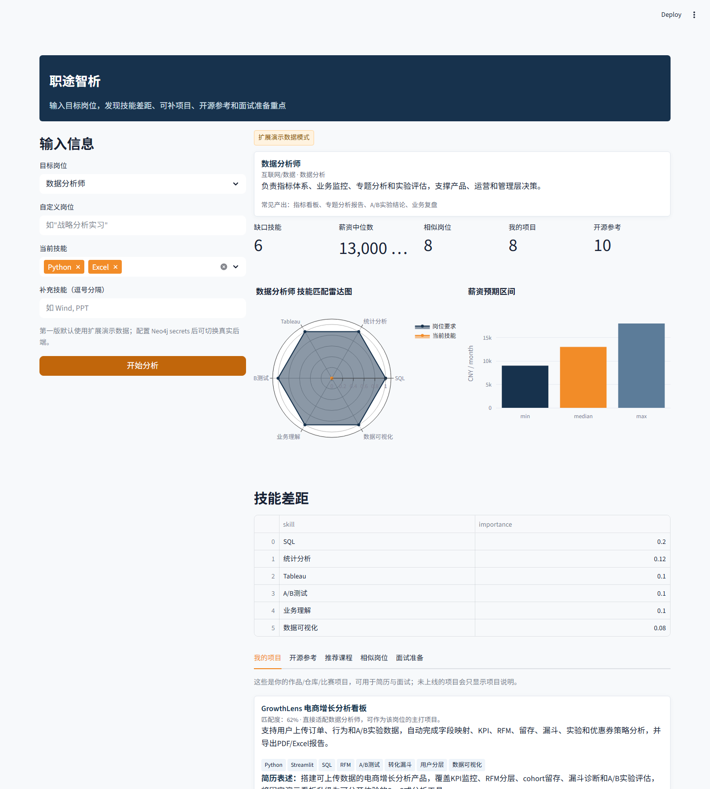
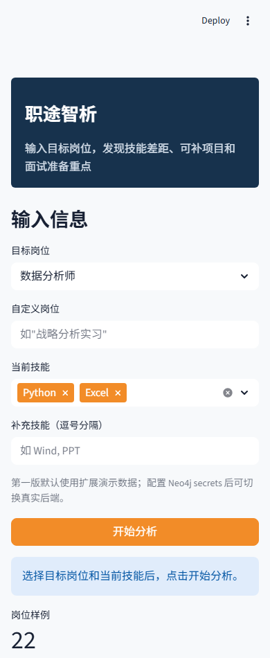

从就业动员会反馈到岗位-技能-课程图谱推荐产品

职途智析结果页截图
这个项目不是从“我要做一个看板”开始的，而是从一次真实的求职场景开始的。
我主导过一次就业动员大会，在收集同学反馈时发现，很多同学并不是完全不努力，而是不知道如何把“岗位要求、自己会什么、还缺什么、该补哪门课”连起来。大家会同时看招聘JD、课程平台、学长学姐经验贴和简历模板，但这些信息是割裂的：
因此，我把问题重新定义为：
准备实习或转方向的学生，需要一个能把岗位JD、个人技能、课程学习和可展示项目连接起来的工具，帮助他们从“我该投什么”推进到“我下一步该补什么、做什么、怎么证明”。
这个定义也参考了用户需求陈述的基本写法：明确用户、需求和使用场景，而不是一开始就陷入功能清单。1
主用户：
次级用户：
最初的论文方向聚焦 NER：从岗位文本和课程文本中抽取技能、课程、岗位等实体，并建立映射关系。
如果只按技术问题来做，产品可能会停留在：
但从产品角度看，用户真正关心的是：
如何把 NER 和岗位知识图谱能力，包装成一个低门槛、可解释、能直接指导求职行动的职业路径推荐产品？
第一版不追求“全量真实招聘平台级别”，而是优先验证产品闭环：
| 维度 | 目标 |
|---|---|
| 可理解 | 学生能看懂岗位画像和缺口技能，不需要理解模型细节。 |
| 可行动 | 输出课程、项目和面试问题，而不是只给匹配分。 |
| 可解释 | 告诉用户为什么推荐这些技能、课程和项目。 |
| 可演示 | 即使没有完整后端和模型，也能在线稳定展示完整流程。 |
| 可扩展 | 后续能接入 NER、Neo4j、薪资预测和真实JD抓取。 |
职途智析
面向学生和就业指导场景的岗位技能图谱推荐工具。
普通求职工具常见的输出是岗位列表或简历建议。职途智析的差异点是把“岗位 - 技能 - 课程 - 项目 - 面试问题”放在同一条决策链路里：
| 模块 | 用户价值 | 第一版实现 |
|---|---|---|
| 目标岗位输入 | 明确求职目标 | 下拉选择 + 自定义岗位 |
| 当前技能输入 | 建立用户画像 | 多选技能 + 补充技能 |
| 技能缺口分析 | 看到差距 | 按岗位技能权重计算缺口 |
| 薪资区间 | 建立岗位预期 | demo薪资分布 |
| 推荐课程 | 给出补齐路径 | 按缺口技能匹配课程 |
| 相似岗位 | 扩展投递方向 | 按技能重叠度排序 |
| GitHub参考项目 | 帮助做作品集/项目复现 | 按岗位和技能推荐开源项目 |
| 面试问题 | 把结果转成面试准备 | 结合岗位和缺口技能生成追问 |
| 模式提示 | 避免夸大能力 | 显示 demo / neo4j 模式 |
| 暂不做 | 原因 |
|---|---|
| 登录和用户账号 | 不影响验证岗位-技能-课程闭环。 |
| 全量实时招聘平台抓取 | 数据成本和维护成本高，MVP先用可控样例数据。 |
| 简历上传解析 | 涉及隐私和解析准确率，后续再接入。 |
| 完整NER模型线上推理 | Streamlit公网部署需要轻量稳定，先保留接口和后端替换空间。 |
| 精细视觉设计 | 作品集重点是产品逻辑、流程和可解释结果，不是视觉展示。 |
这个取舍遵循了作品集案例的核心原则：展示问题、决策、过程和结果，而不是只堆最终界面。2
用户输入
├─ 目标岗位
└─ 当前技能
↓
统一分析接口 analyze_career()
↓
职业图谱适配层
├─ DemoCareerAdapter：保证公网MVP稳定运行
└─ Neo4jCareerAdapter：预留真实知识图谱后端
↓
推荐与解释
├─ 技能缺口
├─ 薪资区间
├─ 推荐课程
├─ 相似岗位
├─ GitHub参考项目
└─ 面试准备问题
↓
结果页展示我把前端页面和后端模型解耦，封装成统一的 analyze_career(target_job, user_skills) 接口。
这样做有三个好处：
用户选择目标岗位后，系统展示岗位所属行业、职业路径、常见产出和核心能力。
产品目的：
系统将岗位所需技能和用户已有技能进行对比，输出缺口技能及权重。
示例：
目标岗位：数据分析师
当前技能：Python、Excel
系统识别：缺少 SQL、统计分析、Tableau、A/B测试、业务理解、数据可视化产品目的：
课程推荐不是泛泛地推“Python课程”，而是基于缺口技能匹配课程。
产品目的：
系统根据目标岗位技能集合和其他岗位技能集合的重叠度，推荐可横向投递的岗位。
产品目的：
这是我在产品化时加入的扩展点。学生不仅需要知道“学什么”，还需要知道“做什么项目能证明我学会了”。
因此我把 GitHub 开源项目接入推荐逻辑，用于：
系统会结合岗位要求和缺口技能生成面试准备问题，例如：
产品目的：
进入产品
↓
选择目标岗位
↓
勾选当前技能 / 输入补充技能
↓
点击开始分析
↓
查看岗位画像与关键指标
↓
查看技能缺口
↓
查看课程、项目、相似岗位
↓
整理学习路径和面试话术| 区域 | 内容 | 设计理由 |
|---|---|---|
| 左侧输入区 | 目标岗位、当前技能、补充技能 | 保持输入动作简单，降低首次使用门槛。 |
| 顶部状态区 | demo/neo4j模式提示 | 明确能力边界，避免误导。 |
| 岗位画像区 | 行业、路径、定位、常见产出 | 先讲清岗位，再讲匹配。 |
| 指标区 | 缺口技能、薪资中位数、相似岗位、GitHub项目 | 快速建立结果概览。 |
| 可视化区 | 技能雷达图、薪资柱状图 | 让差距更直观。 |
| 详情区 | 技能表、课程、项目、岗位、面试准备 | 支撑用户后续行动。 |

职途智析移动端截图
这个项目的原型重点不是视觉，而是“用户能否顺着一条路径完成判断”。
┌──────────────────────────────────────────────┐
│ 职途智析 │
│ 输入目标岗位，发现技能差距、课程路径和项目方向 │
├──────────────┬───────────────────────────────┤
│ 输入信息 │ 结果概览 │
│ │ - 运行模式 │
│ 目标岗位 │ - 岗位画像 │
│ 当前技能 │ - 缺口技能 / 薪资 / 相似岗位 │
│ 补充技能 │ │
│ 开始分析 │ 技能雷达图 + 薪资图 │
│ │ │
│ │ Tab: GitHub项目 / 课程 / 岗位 / 面试 │
└──────────────┴───────────────────────────────┘第一版使用扩展演示数据，保证公网部署稳定：
| 输出 | 计算思路 |
|---|---|
| 技能缺口 | 目标岗位技能集合 - 用户已有技能集合，并保留技能权重。 |
| 推荐课程 | 根据缺口技能匹配课程覆盖范围。 |
| 相似岗位 | 按岗位技能集合重叠度和用户已有技能加权排序。 |
| 参考项目 | 根据目标岗位、项目适配岗位和技能重叠度排序。 |
| 面试问题 | 基于岗位预设问题和高权重缺口技能生成。 |
论文方向中的 NER 可以作为真实后端的关键模块：
招聘JD / 课程介绍
↓
文本清洗
↓
NER抽取：岗位、技能、课程、证书、工具、行业
↓
实体标准化与去重
↓
岗位-技能-课程知识图谱
↓
技能缺口与课程推荐后续可接入：
NER用于岗位技能抽取是一个成熟研究方向，公开研究也常用 NER 或序列标注方法从招聘文本中识别技能实体。3
以“数据分析师 + Python/Excel”为例：
如果继续做真实上线，我会用以下指标评估产品效果。这里参考了 Google HEART 框架中对用户体验指标的拆解方式：从满意度、参与度、采纳率、留存和任务成功度观察产品表现。4
| 目标 | 指标 |
|---|---|
| 用户能完成分析 | 开始分析点击率、分析成功率、无结果率 |
| 推荐结果有用 | 课程点击率、项目点击率、相似岗位点击率 |
| 用户能形成行动 | 学习计划保存率、面试问题复制率、项目收藏率 |
| 推荐质量提升 | 用户反馈“有帮助”比例、推荐后修正率 |
| 数据覆盖提升 | 岗位覆盖数、技能实体覆盖数、课程覆盖数 |
原因：
原因：
原因：
原因：
职途智析是我基于就业动员大会反馈和老师给的 NER 论文方向做的职业路径推荐产品。它解决的是学生看不懂 JD、课程和自身技能之间关系的问题。用户输入目标岗位和已有技能后，系统会输出技能缺口、课程推荐、相似岗位、GitHub项目和面试准备问题。我在第一版里优先验证完整产品闭环，用 demo 数据保证公网可演示，同时通过统一接口预留 NER、Neo4j 和薪资预测模型接入。
我最初做这个项目，是因为在就业动员大会后收集同学反馈时发现，很多同学不是没有学习资源，而是不知道岗位JD里的技能词和课程、项目之间怎么对应。老师同时给了我一个 NER 相关论文方向，希望用命名实体识别从文本中提取课程和岗位实体，实现更精准的课程-岗位定位。
我没有直接把它做成一个算法展示页，而是先重新定义用户问题：学生需要知道目标岗位要求什么、自己缺什么、该补什么课程、做什么项目能证明能力。基于这个问题，我设计了“目标岗位输入 - 当前技能输入 - 技能缺口 - 课程推荐 - 相似岗位 - GitHub项目 - 面试问题”的产品闭环。
第一版我选择 Streamlit 做 MVP，因为它能快速上线并保证可演示。我把后端封装成 analyze_career 统一接口，并设计 demo 和 Neo4j 两种适配器。这样即使真实图谱或 NER 模型还没上线，前端产品体验也可以先验证；后续接入真实模型时，不需要重写页面。
这个项目对我来说最重要的不是页面，而是把一个论文/算法方向转成了真实可用的产品：它能帮助学生把岗位要求转成学习路径和面试证据，也能为后续就业指导和课程建设提供数据化入口。
| 问题 | 回答要点 |
|---|---|
| 为什么不直接做完整 NER？ | 第一版先验证用户流程和推荐闭环，避免模型开发拖慢产品验证；同时保留模型接口。 |
| 你的用户洞察来自哪里？ | 就业动员大会后的同学反馈、老师论文方向、自己求职准备中对 JD/课程/项目割裂的观察。 |
| 这个项目和普通课程推荐有什么区别？ | 它不是从课程出发，而是从目标岗位和技能缺口出发，再推荐课程和项目。 |
| 如何判断推荐结果好不好？ | 短期看分析完成率、课程/项目点击率和反馈；长期看投递准备效率、面试问题准备度和学习路径完成率。 |
| 为什么加入 GitHub 项目？ | 因为学生最终需要在简历和面试里证明能力，开源项目能帮助形成可展示作品。 |
| 如果接入真实数据，最大风险是什么？ | 实体抽取准确率、技能同义词归一、课程质量参差不齐、用户隐私和推荐解释性。 |
这个案例想展示的不是“我做了一个页面”，而是：
Nielsen Norman Group, "User Need Statements: The 'Define' Stage in Design Thinking", https://www.nngroup.com/articles/user-need-statements/↩
Nielsen Norman Group, "UX Portfolios: What Hiring Managers Look For", https://www.nngroup.com/articles/ux-design-portfolios/↩
Zhang et al., "SKILL: A System for Skill Identification and Normalization", arXiv, https://arxiv.org/abs/2209.08071↩
Google Research, "Measuring the User Experience on a Large Scale: User-Centered Metrics for Web Applications", https://research.google/pubs/measuring-the-user-experience-on-a-large-scale-user-centered-metrics-for-web-applications/↩